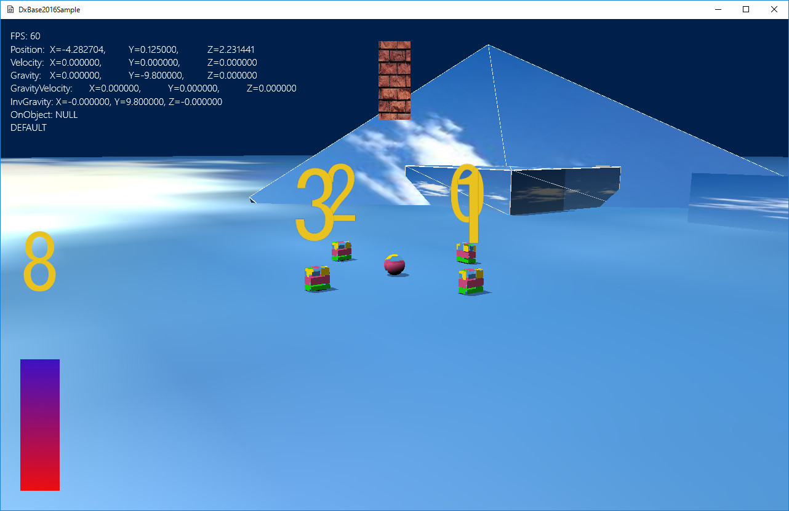

図3001a
スプライトは、カメラを変化させてもそこから動きません。
void SimpleSprite::OnCreate(){
auto PtrTransform = AddComponent<Transform>();
PtrTransform->SetPosition(m_StartPos);
PtrTransform->SetScale(1.0f, 1.0f, 1.0f);
PtrTransform->SetRotation(0.0f, 0.0f, 0.0f);
//スプライトをつける
auto PtrSprite = AddComponent<PCTSpriteDraw>(Vector2(128.0f, 128.0f),
Color4(1.0f, 1.0f, 1.0f, 1.0f));
PtrSprite->SetTextureResource(L"WALL_TX");
//センター原点
PtrSprite->SetSpriteCoordinate(SpriteCoordinate::m_CenterZeroPlusUpY);
//両面描画
PtrSprite->SetRasterizerState(RasterizerState::CullNone);
}
//センター原点
PtrSprite->SetSpriteCoordinate(SpriteCoordinate::m_CenterZeroPlusUpY);
void SimpleSprite::OnUpdate(){
//前回のターンからの時間
float ElapsedTime = App::GetApp()->GetElapsedTime();
m_TotalTime += ElapsedTime;
auto PtrTransform = AddComponent<Transform>();
PtrTransform->SetScale(cos(m_TotalTime), 1.0f,1.0f);
}
//初期化
void NumberSprite::OnCreate(){
auto PtrTransform = AddComponent<Transform>();
PtrTransform->SetPosition(m_StartPos);
PtrTransform->SetScale(1.0f, 1.0f, 1.0f);
PtrTransform->SetRotation(0.0f, 0.0f, 0.0f);
//スプライトをつける
auto PtrSprite = AddComponent<PCTSpriteDraw>(Vector2(128.0f,128.0f),
Color4(1.0f, 1.0f, 1.0f, 1.0f));
PtrSprite->SetTextureResource(L"NUMBER_TX");
//透明処理
SetAlphaActive(true);
//左上原点
PtrSprite->SetSpriteCoordinate(SpriteCoordinate::m_LeftTopZeroPlusDownY);
//スプライトの中のメッシュからバックアップの取得
auto& SpVertexVec
= PtrSprite->GetMeshResource()->GetBackupVerteces<VertexPositionColorTexture>();
//各数字ごとにUV値を含む頂点データを配列化しておく
for (size_t i = 0; i < 10; i++){
float from = ((float)i) / 10.0f;
float to = from + (1.0f / 10.0f);
vector<VertexPositionColorTexture> NumVirtex =
{
//左上頂点
VertexPositionColorTexture(
SpVertexVec[0].position,
Color4(1.0f, 1.0f, 1.0f, 1.0f),
Vector2(from, 0)
),
//右上頂点
VertexPositionColorTexture(
SpVertexVec[1].position,
Color4(1.0f, 1.0f, 1.0f, 1.0f),
Vector2(to, 0)
),
//左下頂点
VertexPositionColorTexture(
SpVertexVec[2].position,
Color4(1.0f, 1.0f, 1.0f, 1.0f),
Vector2(from, 1.0f)
),
//右下頂点
VertexPositionColorTexture(
SpVertexVec[3].position,
Color4(1.0f, 1.0f, 1.0f, 1.0f),
Vector2(to, 1.0f)
),
};
m_NumberVertexVec.push_back(NumVirtex);
}
}
void NumberSprite::OnUpdate(){
//前回のターンからの時間
float ElapsedTime = App::GetApp()->GetElapsedTime();
m_TotalTime += ElapsedTime;
size_t Num = (size_t)m_TotalTime;
Num = Num % 10;
auto PtrSprite = GetComponent<PCTSpriteDraw>();
auto MeshRes = PtrSprite->GetMeshResource();
//動的にUV値が変わる頂点を設定する
MeshRes->UpdateVirtexBuffer(m_NumberVertexVec[Num]);
}
void BarSprite::OnCreate(){
auto PtrTransform = AddComponent<Transform>();
PtrTransform->SetPosition(m_StartPos);
PtrTransform->SetScale(1.0f, 1.0f, 1.0f);
PtrTransform->SetRotation(0.0f, 0.0f, 0.0f);
//スプライトをつける
//すぐに頂点を変更してしまうので、サイズは適当でよい
auto PtrSprite = AddComponent<PCTSpriteDraw>(Vector2(SpriteWidth, SpriteHeight),
Color4(1.0f, 1.0f, 1.0f, 1.0f));
//左上
m_BarVirtexVec.push_back(
VertexPositionColorTexture(
Vector3(0.0f, SpriteHeight, 0),
Color4(1.0f, 1.0f, 1.0f, 1.0f),
Vector2(0, 0))
);
//右上
m_BarVirtexVec.push_back(
VertexPositionColorTexture(
Vector3(SpriteWidth, SpriteHeight, 0),
Color4(1.0f, 1.0f, 1.0f, 1.0f),
Vector2(1.0f, 0))
);
//左下
m_BarVirtexVec.push_back(
VertexPositionColorTexture(
Vector3(0.0f, 0.0f, 0),
Color4(1.0f, 1.0f, 1.0f, 1.0f),
Vector2(0, 1.0f))
);
//右下
m_BarVirtexVec.push_back(
VertexPositionColorTexture(
Vector3(SpriteWidth, 0.0f, 0),
Color4(1.0f, 1.0f, 1.0f, 1.0f),
Vector2(1.0f, 1.0f))
);
//スプライトの中のメッシュの取得
auto MeshRes = PtrSprite->GetMeshResource();
//頂点を設定する
MeshRes->UpdateVirtexBuffer(m_BarVirtexVec);
PtrSprite->SetTextureResource(L"BAR_TX");
//左下原点
PtrSprite->SetSpriteCoordinate(SpriteCoordinate::m_LeftBottomZeroPlusUpY);
}
void BarSprite::OnUpdate(){
//前回のターンからの時間
float ElapsedTime = App::GetApp()->GetElapsedTime();
m_TotalTime += ElapsedTime * 2.0f;
//sinは-1.0から1.0まで取りうるので調整
float v = cos(m_TotalTime) * 0.5f + 0.5f;
float y = SpriteHeight - SpriteHeight * v;
m_BarVirtexVec[0].position.y = y;
m_BarVirtexVec[0].textureCoordinate.y = v;
m_BarVirtexVec[1].position.y = y;
m_BarVirtexVec[1].textureCoordinate.y = v;
auto PtrSprite = GetComponent<PCTSpriteDraw>();
//スプライトの中のメッシュの取得
auto MeshRes = PtrSprite->GetMeshResource();
//頂点を設定する
MeshRes->UpdateVirtexBuffer(m_BarVirtexVec);
}
void NumberSquare::OnCreate(){
auto PtrTransform = AddComponent<Transform>();
if (!m_SeekObject.expired()){
auto SeekPtr = m_SeekObject.lock();
auto SeekTransPtr = SeekPtr->GetComponent<Transform>();
auto Pos = SeekTransPtr->GetPosition();
Pos.y += 0.75f;
PtrTransform->SetPosition(Pos);
PtrTransform->SetScale(1.0f, 1.0f, 1.0f);
PtrTransform->SetQuaternion(SeekTransPtr->GetQuaternion());
//変更できるスクエアリソースを作成
//頂点配列
vector<VertexPositionNormalTexture> vertices;
//インデックスを作成するための配列
vector<uint16_t> indices;
//Squareの作成(ヘルパー関数を利用)
VertexUtil::CreateSquare(1.0f, vertices, indices);
//UV値の変更
float from = ((float)m_Number) / 10.0f;
float to = from + (1.0f / 10.0f);
//左上頂点
vertices[0].textureCoordinate = Vector2(from, 0);
//右上頂点
vertices[1].textureCoordinate = Vector2(to, 0);
//左下頂点
vertices[2].textureCoordinate = Vector2(from, 1.0f);
//右下頂点
vertices[3].textureCoordinate = Vector2(to, 1.0f);
//頂点の型を変えた新しい頂点を作成
vector<VertexPositionColorTexture> new_vertices;
for (auto& v : vertices){
VertexPositionColorTexture nv;
nv.position = v.position;
nv.color = Color4(1.0f, 1.0f, 1.0f, 1.0f);
nv.textureCoordinate = v.textureCoordinate;
new_vertices.push_back(nv);
}
//新しい頂点を使ってメッシュリソースの作成
m_SquareMeshResource
= MeshResource::CreateMeshResource<VertexPositionColorTexture>(
new_vertices, indices, true);
auto DrawComp = AddComponent<PCTStaticDraw>();
DrawComp->SetMeshResource(m_SquareMeshResource);
DrawComp->SetTextureResource(L"NUMBER_TX");
SetAlphaActive(true);
}
}
vector<VertexPositionColorTexture> new_vertices;
for (auto& v : vertices){
VertexPositionColorTexture nv;
nv.position = v.position;
nv.color = Color4(1.0f, 1.0f, 1.0f, 1.0f);
nv.textureCoordinate = v.textureCoordinate;
new_vertices.push_back(nv);
}
//新しい頂点を使ってメッシュリソースの作成
m_SquareMeshResource
= MeshResource::CreateMeshResource<VertexPositionColorTexture>(
new_vertices, indices, true);
void NumberSquare::OnUpdate(){
if (!m_SeekObject.expired()){
auto SeekPtr = m_SeekObject.lock();
auto SeekTransPtr = SeekPtr->GetComponent<Transform>();
auto PtrTransform = GetComponent<Transform>();
auto Pos = SeekTransPtr->GetPosition();
Pos.y += 0.75f;
PtrTransform->SetPosition(Pos);
PtrTransform->SetScale(1.0f, 1.0f, 1.0f);
auto PtrCamera = GetStage()->GetCamera(0);
Quaternion Qt;
//向きをビルボードにする
Qt.Billboard(PtrCamera->GetAt() - PtrCamera->GetEye());
//向きをフェイシングにする場合は以下のようにする
// Qt.Facing(Pos - PtrCamera->GetEye());
//向きをフェイシングYにする場合は以下のようにする
// Qt.FacingY(Pos - PtrCamera->GetEye());
//向きをシークオブジェクトと同じにする場合は以下のようにする
// Qt = SeekTransPtr->GetQuaternion();
PtrTransform->SetQuaternion(Qt);
}
}
//向きをビルボードにする
Qt.Billboard(PtrCamera->GetAt() - PtrCamera->GetEye());